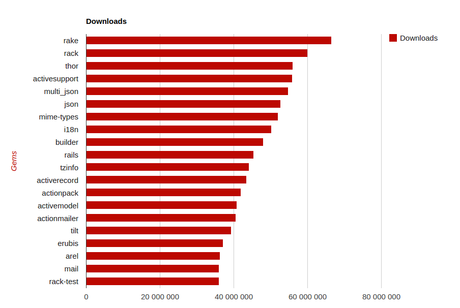
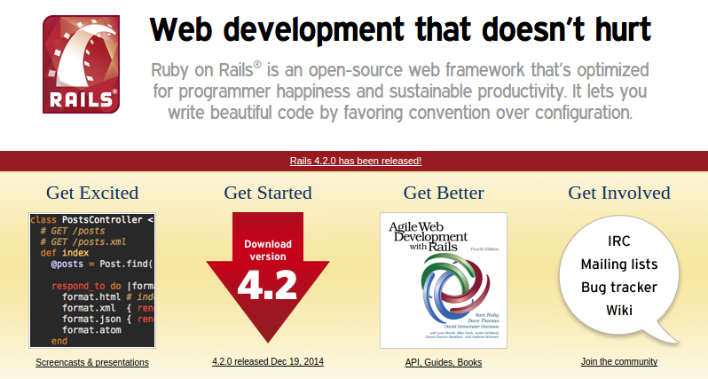
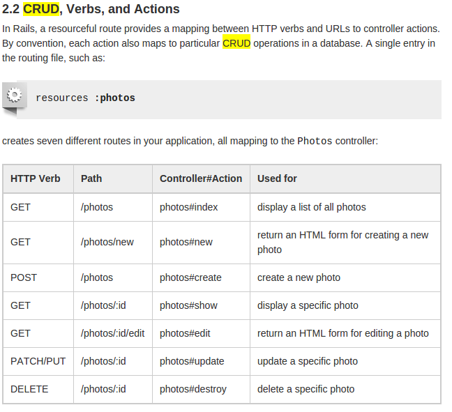

| z, ? | toggle help (this) |
| space, → | next slide |
| shift-space, ← | previous slide |
| b | blank screen |
| d | toggle debug mode |
| ## <ret> | go to slide # |
| c, t | table of contents (vi) |
| f | toggle footer |
| g | toggle follow |
| r | reload slides |
| n | toggle notes |
| p | run preshow |
| P | toggle pause |
| s | choose style |
first slide
A dynamic, open source programming language with a focus on simplicity and productivity. It has an elegant syntax that is natural to read and easy to write.

4.times do |i|
threads << Thread.new do
mutex.synchronize {
resource.wait(mutex)
# complicated task
}
end
end4.times do |i|
fork do
# complicated task
end
end# Method example
def read(path)
return nil unless File.exist?(path)
File.read(path)
end
# RSpec example
Post.last.should have(10).comments# Sinatra example
get '/' do
'Hello world!'
end
# Block example
ChessGame.new do |move|
move.black_pawn(forward)
move.white_pawn(forward)
# ...
move.white_queen(pwn_king)
end$ irb> "foo".class
String
$ irb> 1.class
Fixnum
$ irb> abs(-1)
NoMethodError: undefined method `abs' for main:Object
$ irb> -1.abs()
1
$ irb> "hello aveiro".pluralize.camelize
"Hello aveiros"
$ irb> %w(world galaxy).each{|s| puts "hello #{s}".upcase}
"HELLO WORLD"
"HELLO GALAXY"
class Greeter
def initialize(name = "World")
@name = name
end
def say_hi
puts "Hi #{@name}!"
end
def say_bye
puts "Bye #{@name}, come back soon."
end
endarray = ["one", "two", "nine"]
hash = {one: 1, two: 2, nine: 9}
range = 1..4
range.to_a
# => [2, 3, 4]
range.include?(3)
# => truea package manager for the Ruby programming language that provides a standard format for distributing Ruby programs and libraries (in a self-contained format called a "gem"), a tool designed to easily manage the installation of gems, and a server for distributing them.
installing a GEM
$ gem install mysql2
Building native extensions. This could take a while...
Successfully installed mysql2-1.3.10
1 gem installed
list installed GEMs
$ gem list
*** LOCAL GEMS ***
addressable (2.3.6) (2.3.7)
bigdecimal (1.2.6)
blankslate (3.1.3)
remove old versions
$ gem cleanup addressable
# remove all old versions of the gem
$ gem uninstall addressable --version 2.3.6
# remove version 2.3.6 only
$ gem uninstall addressable --version '<2.3.7'
# remove all versions less than 2.3.7

$ gem install bundler
Create a file named Gemfile
source 'https://rubygems.org'
gem 'nokogiri'
gem 'rack', '~>1.1'
gem 'rspec', :require => 'spec'this downloads GEMs + creates Gemfile.lock
GEM
remote: https://rubygems.org/
specs:
actionmailer (4.2.0)
...

mvc
Action Pack Active Support Active Record Action Mailer Active Resource Active Job
View and Controller logic
Collection of utility classes and library extensions
Object relationship mapper for various databases: MySQL (mariaDB), postgreSQL, Redis etc.
email delivery
Object relational mapper for RESTful WEB.
Wrapper for background jobs processing.

RoR folder structure
Show folder structure in project
Table: orders
Class: Order
File: /app/models/order.rb
Primary Key: id
Foreign Key: customer_id
Link Tables: items_orders
Class: OrdersController
File: /app/controllers/orders_controller.rb
Layout: /app/layouts/orders.html.erb
Helper: /app/helpers/orders_helper.rb
Helper Module: OrdersHelper
Views: /app/views/orders/… (list.html.erb for example)
Scenario:
As Aveiro accounting manager
When CEO approves invoice
I should receive an email with document
# classic
User.all.each{|u| puts "#{u.name}: #{u.roles.map(&:role).join(",")}"}
> User Load (0.2ms) SELECT "users".* FROM "users"
> Role Load (0.1ms) SELECT "roles".*
FROM "roles" WHERE "roles"."user_id" = ? [["user_id", 1]]
> Role Load (0.0ms) SELECT "roles".*
FROM "roles" WHERE "roles"."user_id" = ? [["user_id", 2]]
# smart include
User.include(:roles).all.each{|u| puts "#{u.name}: #{u.roles.map(&:role).join(",")}"}
> User Load (2.1ms) SELECT "users".* FROM "users"
> Role Load (0.1ms) SELECT "roles".* FROM "roles" WHERE "roles"."user_id" IN (1, 2)
# eager load
User.eager_load(:roles).all.each{|u| puts "#{u.name}: #{u.roles.map(&:role).join(",")}"}
> SQL (0.5ms) SELECT "users"."id" AS t0_r0, "users"."first_name" AS t0_r1,
"users"."last_name" AS t0_r2, "users"."email" AS t0_r3, "users"."provider" AS t0_r4,
"users"."uid" AS t0_r5, "users"."token" AS t0_r6, "users"."image_name" AS t0_r7,
"users"."image_uid" AS t0_r8, "users"."created_at" AS t0_r9, "users"."updated_at" AS t0_r10,
"roles"."id" AS t1_r0, "roles"."user_id" AS t1_r1, "roles"."role" AS t1_r2, "roles"."created_at" AS t1_r3,
"roles"."updated_at" AS t1_r4 FROM "users" LEFT OUTER JOIN "roles" ON "roles"."user_id" = "users"."id"
$ git clone https://github.com/AveiroAS/employees-invoices-greg.git
$ cd employees-invoices-greg
$ bundle install
$ rails s
# visit http://lvh.me:3000